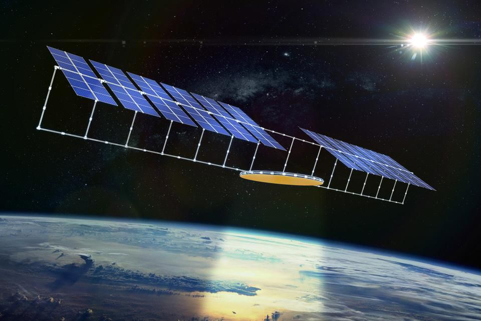

The leading countries in renewable energy production.
China
The most important measure in the energy balance of China is the total consumption of 7.14 million GWh of electric energy per year. China produces around 1.73 million GWh of renewable energy per year, which is around 24% of their total energy consumption.- Hydropower:
- Using Hydro Power China produces 1.15 million GWh of electric energy, which is 66.3% of the total renewable energy.
- Wind Power:
- Using Wind Power China produces 0.3 million GWh of electric energy, which is 20.5% of the total renewable energy.
- Biomass Energy:
- Using Biomass and waste products China produces 0.1 million GWh of electric energy, which is 6.4% of the total renewable energy.
- Solar Power:
- Using Solar Power China produces 0.1 million GWh of electric energy, which is 6.7% of the total renewable energy.
- Geothermal Energy:
- Using Geothermal Energy China produces 143.5 GWh of electric energy, which is approximately 0% of the total renewable energy. Please note: The data presented here is based on the year 2019.
The sources of renewable energy used in China are:

United States
The most important measure in the energy balance of United States is the total consumption of 4.32 million GWh of electric energy per year. US produces around 637 thousand GWh of renewable energy per year, which is around 14% of their total energy consumption.- Hydropower:
- Using Hydropower United States produces 292 thousand GWh of electric energy, which is 45.9% of the total renewable energy.
- Wind Power:
- Using Wind Power United States produces 229 thousand GWh of electric energy, which is 36% of the total renewable energy.
- Biomass Energy:
- Using Biomass and Waste products United States produces 69 thousand GWh of electric energy, which is 10.8% of the total renewable energy.
- Solar Power:
- Using Solar power United States produces 292 thousand GWh of electric energy, which is 45.9% of the total renewable energy.
- Geothermal Energy:
- Using Geothermal Energy United States produces 18 thousand GWh of electric energy, which is 2.9% of the total renewable energy. Please note: The data presented here is based on the year 2016.
The sources of renewable energy used in United States are:

Brazil
The most important measure in the energy balance of Brazil is the total consumption of 578 thousand GWh of electric energy per year. Brazil produces around 465 thousand GWh of renewable energy per year, which is around 80% of their total energy consumption.- Hydropower:
- Using Hydropower Brazil produces 380 thousand GWh of electric energy, which is 81.8% of the total renewable energy.
- Wind Power:
- Using Wind Power Brazil produces 33 thousand GWh of electric energy, which is 7.2% of the total renewable energy.
- Biomass Energy:
- Using Biomass and Waste Products Brazil produces 51 thousand GWh of electric energy, which is 11% of the total renewable energy.
- Solar Power:
- Using Solar Power Brazil produces 138.8 GWh of electric energy, which is approximately 0 % of the total renewable energy.
- Geothermal Energy:
- Using Geothermal Energy Brazil produces negligible amount of electric energy as compared to other sources of renewable energy. Please note: The data presented here is based on the year 2016.
The sources of renewable energy used in Brazil are:

India
The most important measure in the energy balance of India is the total consumption of 1.5 million GWh of electric energy per year. India produces around 288 thousand GWh of renewable energy per year, which is around 18% of their total energy consumption.- Hydropower:
- Using Hydropower India produces 165 thousand GWh of electric energy, which is 57.21 % of the total renewable energy.
- Wind Power:
- Using Wind Power India produces 64 thousand GWh of electric energy, which is 22.3% of the total renewable energy.
- Biomass Energy:
- Using Biomass and Waste Products India produces 13 thousand GWh of electric energy, which is 4.8 % of the total renewable energy.
- Solar Power:
- Using Solar Power India produces 50 thousand GWh of electric energy, which is around 17.3% of the total renewable energy.
- Geothermal Energy:
- Using Geothermal Energy India produces negligible amount of electric energy as compared to other sources of renewable energy. Please note: The data presented here is based on the year 2019.
The sources of renewable energy used in India are:

Conclusion

Conclusion
According to me, China is doing the best among all the countries in the world on renewal energy front. China produces the highest amount of renewable energy in the whole world. The other countries which are doing great in this field are United States of America, Brazil, Canada, India etc. The most efficient source of renewable energy is Hydro Power, although it takes a lot of investment and time to construct the plant but in the long run, it is very rewarding.Potential Future Renewable Energy Sources
Space based Solar Energy
This technology was first proposed by an aerospace engineer by the name of Peter Glaser in 1968. People also consider him to be the “the father of the solar-powered satellite.” However, they have never fully realized it. This model of harnessing energy is based upon the fact that sunlight in space is largely uninterrupted. Current solar technology is at the mercy of weather conditions. It can only produce energy during daylight hours. Space-based solar farms overcome these obstacles by eliminating nighttime blackouts and inclement weather. Additionally, sunlight found outside Earth’s atmosphere is 30% more intense than the sunlight we receive on Earth’s surface.The biggest challenge is getting the harnessed energy back down to Earth. The energy these solar farms produce can be sent down in the form of microwaves or with a powerful laser. The issue with this is that the cost of the entire process currently outweighs the benefit of the increased power production it provides.
With the rise of private space companies, some have predicted that this technology could be commercially viable within 30 years. China currently has plans to construct a space-based solar farm. They claim to already be testing the technology and aim to have a functioning space-based solar farm before 2050.
- Can deliver energy anywhere on Earth
- Circumvents current drawbacks of traditional solar energy production
Advantages of Space Bases Solar Energy Farms
May be commercially viable within the next 30 years.

Human Energy
Humans gather calories through the consumption of food, which our bodies then convert into usable energy. We use this energy for vital functions, such as keeping our hearts beating or powering our brains. However, much of the energy our bodies produce is also used in the forms of heat and kinetic energy through movement. Much of this is goes to waste and remains unclaimed by humans.At rest, the average person’s body produces around 100 watts of power. Production is much higher when performing vigorous activities. For example, cycling can generate 400 watts of power per hour. However, top-performing cyclists have been recorded generating up to 1800 watts. That was during short bursts of exertion.
There are two big issues with the harnessing of human energy. The first is that current energy harvesting strategies are not very efficient. However, this is set to change in the future. Scientists are developing technologies that harness this energy at enhanced efficiencies and at a lower cost.
The second problem holding back human power as a viable renewable energy source is that of modern battery technology. The battery systems currently available to us are too large, heavy and bulky to make this sort of technology viable. However, recent breakthroughs in energy-storing technology may soon be on the horizon.
- Viable for busy urban areas.
- Can convert heat and kinetic energy that humans have produced into electrical energy.
- Harnesses energy that would otherwise go to waste.